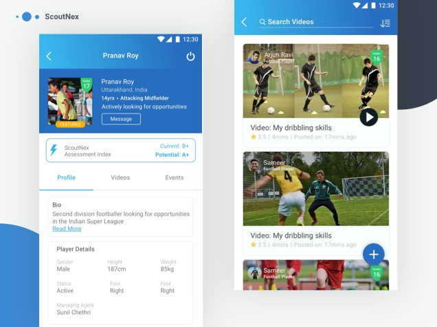

I’m Shaheen, a charismatic designer with over 3+ years of experience in functional as well as aesthetic interface crafting for various software applications. I believe in the principles of User centric design, specialising in component design, documentation and user behaviour. In course of my association with previous employers viz; product as well as service companies, I have been successful in obtaining good reviews and recognition for my contributions in design of various apps under healthcare, sports, education and lifestyle domains. Professionally I call myself a designer, but in free times I love to write programs too. This sums up a quick brief about my skills and interests, for more details, feel free to drill down the sections below.
An interface that benefits players to connect with the scouting team for their specific needs in one common platform. The application helps create new opportunities, chat with various stake holders, create new profiles, arrange and track events and updates to help the ones in need all under a single roof at ease.
